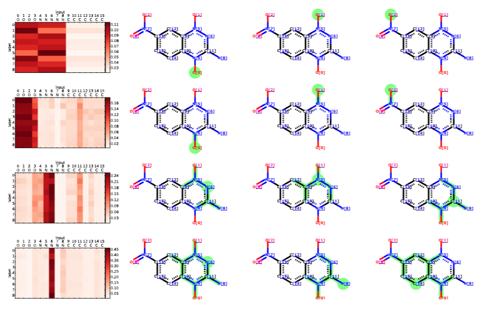
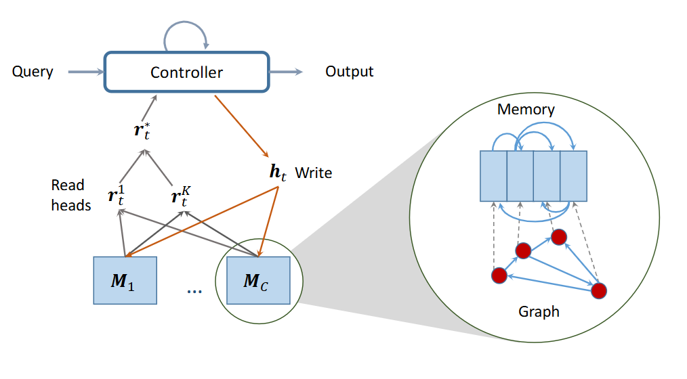
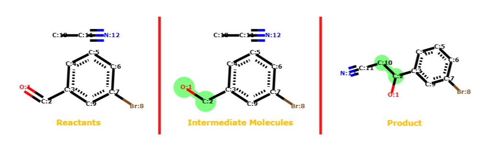
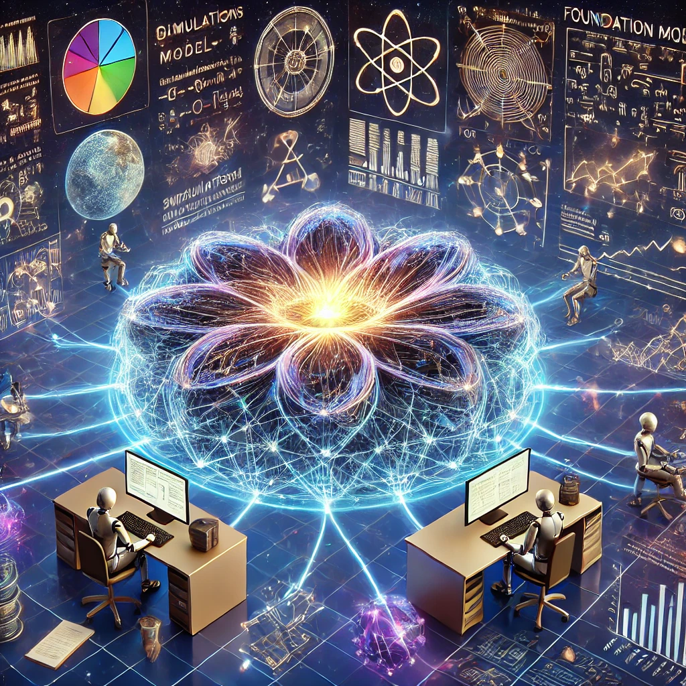
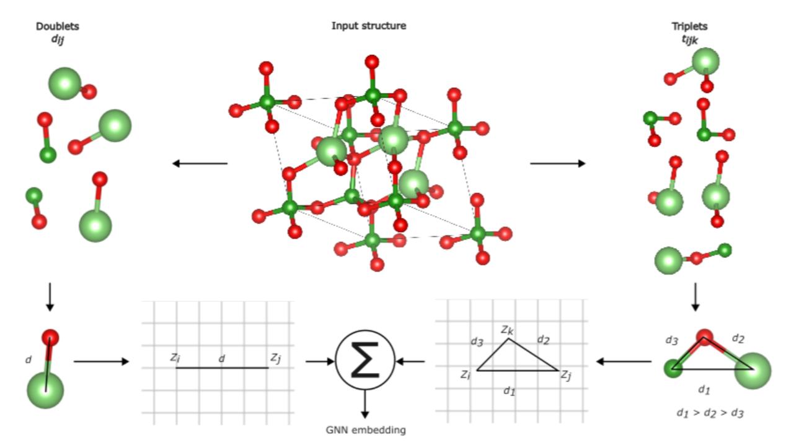
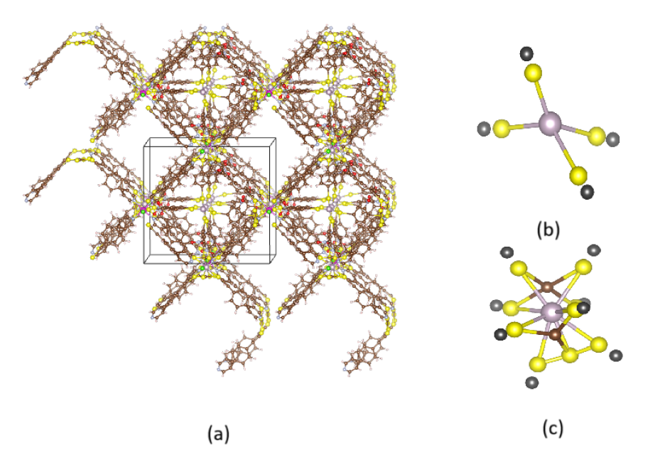
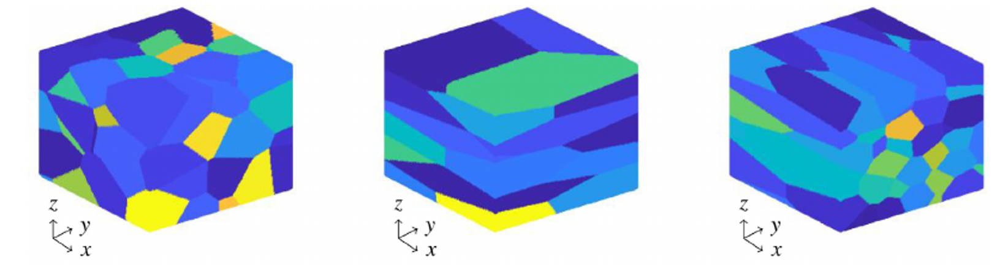
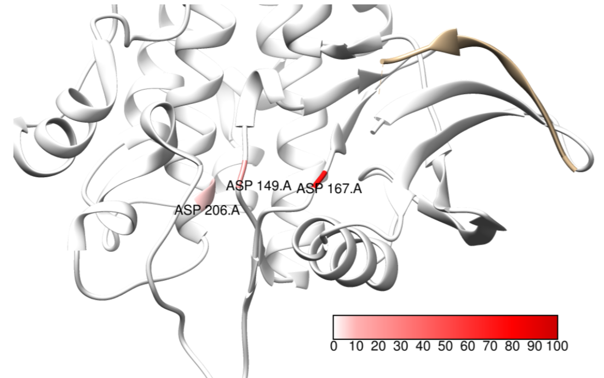
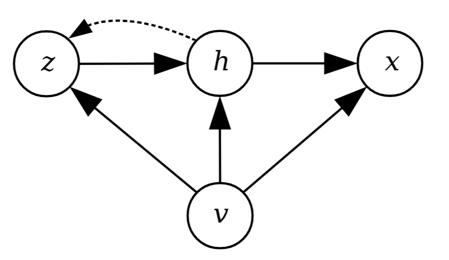
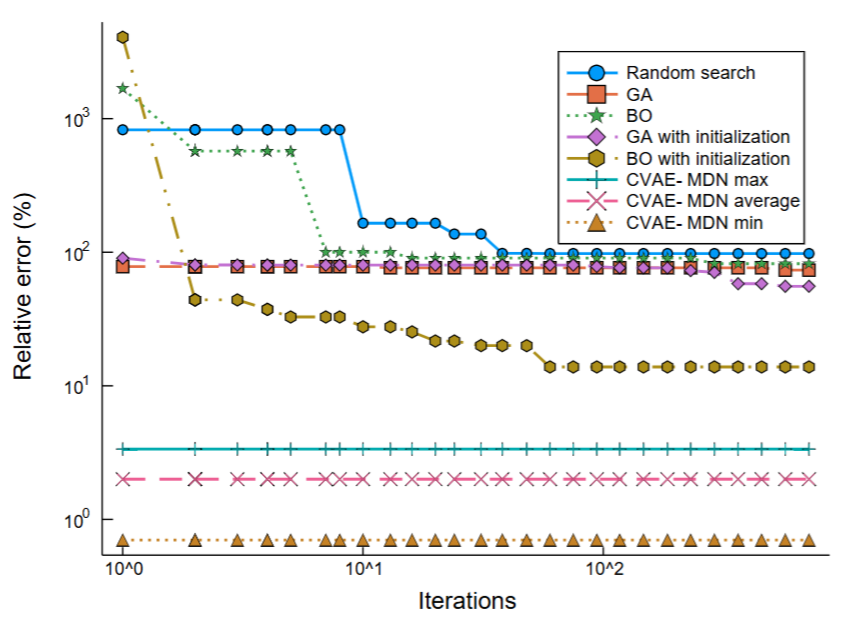

(Source: wikipedia.com)
{kind=link}
AI4Science Projects
Multi-target molecular property prediction
Molecules have multiple properties of interest, and often all of them must be satisfactory for practical use in applications like drug discovery and materials design. This project develops new scalable and explainable techniques based on Graph Neural Networks to predict hundreds of properties simultaneously, leveraging the strong correlations between them. By encoding molecular structures as graphs and utilizing advanced attention mechanisms, our models capture complex structure-property relationships across diverse chemical spaces. The framework achieves state-of-the-art accuracy while providing interpretable insights into property predictions. Notably, the models are capable of zero-shot learning, enabling prediction of new properties using only their textual descriptions, thus reducing the need for extensive experimental data.

Substructures of a molecule corresponding to 8 prediction targets (PubChem SID: 491286)
Prediction of chemical-chemical interaction
Chemicals are rarely used in isolation but are typically surrounded by other chemicals in solutions, mixtures, and reactions. This project builds flexible machine learning models that predict interactions between any subset of chemicals in complex environments. By leveraging graph neural networks, attention mechanisms and neural computers, our approach captures both pairwise and higher-order interactions between molecular species. The framework can accounts for any contexts like concentration effects, pH conditions, and environmental factors that influence chemical behavior. This enables accurate prediction of properties like solubility, reactivity, and stability in multi-component systems, crucial for applications in drug development, materials synthesis, and chemical process optimization.

Flexible multiple molecules interaction modelling, aiming at answering multiple queries about the molecular system. The underlying model is Relational Dynamic Memory Networks.
Predicting chemical reactions is central to chemistry, impacting fields from drug synthesis to materials processing. In this project we reframe the reaction prediction problem as graph morphism, where a collection of reactants and catalysts form a supra-graph with temporarily disjoint sub-graphs. Reactions are viewed as a sequential decision problem, where each bond change is an action in the reaction pathway. Using reinforcement learning and graph neural networks, our model learns to predict likely reaction mechanisms by sequentially modifying molecular bonds, considering aspects such as electronic effects, steric hindrance, and thermodynamic feasibility. This approach enables prediction of complex reaction pathways, yields, and side products while providing mechanistic insights into chemical transformations.

Reaction represented as a set of
graph transformations from reactants (leftmost) to
products (rightmost).
| The scientific
enterprise has generated massive
empirical data from simulations and experimental studies. Much of the
knowledge is documented in the scientific literature, in the form of
textual description, mathematical equations, diagrams and tables. All
of these knowledge sources can be intergated into an associative memory
to be retrieved later in the form of Foundation Models (FMs). Thi
research program aims at leveraging recent advances in Large Language
Models (LLMs) to build scientific FMs, which will later be used by AI
Scientist agents in scientific workflows. Left: DALL·E 3 illustration of Foundation Models, compressing all scientific knowledge into its parameters. |  |
Goal-driven
crystal
structure generation
Designing crystals is difficult as it requires deep
knowledge of materials science and exploration of a massive
combinatorial space. This project develops AI-driven methods for rapid
exploration of the crystal space towards targeted properties while
satisfying domain-specific constraints. Our approach combines
generative models with physics-informed neural networks to navigate the
vast space of possible crystal structures, considering atomic
composition, symmetry groups, and lattice parameters. The framework
incorporates materials science principles like electronegativity rules,
size effects, and thermodynamic stability to ensure generated
structures are both novel and synthesizable. This enables efficient
discovery of new crystals for applications ranging from semiconductors
to energy storage materials.

The examples of DFT-verified stable structures (Ehull = 0 eV/atom).
Physics-informed
GNNs for materials
This project develops physics-informed graph
neural networks (PiGNNs) to model materials, incorporating fundamental
physical laws such as symmetries and conservation directly into the
neural architecture. Unlike traditional GNNs, physical priors are
encoded through custom loss functions and specialized message-passing
operations. This approach aims to improve prediction accuracy for
properties like formation energy, bandgap, and elastic moduli while
ensuring physically consistent results, even with limited training data.

Embedding material graphs using the electron-ion potential.
Designing
MOF for CO2 capturing
This project develops Generative AI to
accelerate the discovery of Metal-Organic Frameworks (MOFs) optimized
for CO2 capture. By combining deep generative models with
high-throughput screening, we develop an AI framework that learns the
complex relationships between MOF structure, chemical composition, and
CO2 adsorption capabilities. The system generates novel MOF candidates
by exploring the vast chemical space of metal nodes and organic linkers
while ensuring synthetic feasibility and stability. Our approach
incorporates domain knowledge about pore size distributions, surface
area constraints, and binding site energetics to prioritize structures
with high CO2 selectivity and working capacity under industrial
conditions.

(a) Example MOF structure (b)(c) Example metal clusters discovered.
Modelling
crystals plasticity
This project develops deep neural networks to
model stress-strain relationships in polycrystalline materials, where
multiple grain types coexist with distinct crystallographic
orientations. Our approach captures the complex interplay between
individual grain deformation mechanisms, grain boundary interactions,
and overall mechanical response. By incorporating microstructural
features like grain size distributions, misorientation angles, and
texture evolution, the model predicts heterogeneous plastic deformation
across different grain populations. The framework accounts for
grain-specific slip systems, local strain incompatibilities at
boundaries, and texture-dependent hardening behaviors to enable
accurate prediction of polycrystalline materials' mechanical properties
under various loading conditions.

Crystal microstructures.
Drug-protein
binding
prediction
This project aims at inventing new
data-efficient AI models to precisely predict the location and strength
of binding between drug molecules and target proteins, a critical
challenge in drug discovery. By developing advanced neural
architectures that capture both 2D/3D drug conformations and protein
structures, we model the complex physicochemical interactions at
binding sites. Our approach integrates multiple learning strategies:
representation learning for 2D/3D molecular
structures, attention mechanisms for binding site identification,
transfer learning from related protein families, and interpretability
methods to explain predictions. The framework incorporates biophysical
constraints and leverages limited experimental data to achieve accurate
binding affinity predictions while providing mechanistic insights into
drug-protein interactions.

Attention values at predicted binding sites of MST1 target.
Deep
hybrid generative-discriminative model for inverse design
This project aims at developing general data-driven techniques for predicting the design parameters for any target in a single step. This poses two technical challenges: the first caused due to one-to-many mapping when learning the inverse problem and the second caused due to an user specifying the target specifications only partially. To overcome the challenges, we formulate this problem as conditional density estimation under high-dimensional setting with incomplete input and multimodal output.
|

CVAE-MDN,
where x:
input design, v:
specified target component, h:
unspecified part, and z:
latent variable. Left: Search speed comparison of the proposed CVAE-MDN with other search techniques. |

|
- Studying and developing advanced machine learning based models for extracting chemical/drug-disease relations from biomedical literature”, ($54K), Vietnam NAFOSTED, 2017–2018.
- Building a simulator of mail sorting machine, ($12K), PTIT VN, 2003..
- Generative AI to accelerate discovery of materials, Keynote @PRICM11, Nov 2023.
- AI
for automated materials discovery via learning to represent, predict,
generate and explain, @Thuyloi University,
May 2023.
- Machine learning and reasoning for drug discovery Tutorial @ECML-PKDD, Sept 2021.
- Climate
change: Challenges and AI-driven solutions, @Swinburne Vietnam,
Hanoi,
Vietnam, Dec 2019.
- Modern AI for drug discovery, VietAI Summit, Nov 2019.
- Lecture on Deep learning for biomedicine, Southeast Asia Machine Learning (SEA ML) School, Depok, Greater Jakarta, Indonesia, July 2019.
- Deep learning for genomics: Present and future, Genomic Medicine 2019, Hanoi, Vietnam, June 2019.
- AI for matters, Phenikaa University, Hanoi, Vietnam, Jan 2019.
- Deep learning for biomedicine: Genomics and Drug design, Institute of Big Data, Hanoi, Vietnam, Jan 2019.
- Deep learning for biomedical discovery and data mining, Tutorial at PAKDD'18, Melbourne, Australia.
- The
dynamics of knowledge, Truyen
Tran, Medium,
October 2024.
- AI, math, medicine, software, and the sciences: A shifting landscape, Truyen Tran, Medium, August 2024.
Preprints
- Scale matters: simulation of nanoscopic dendrite initiation in the lithium solid electrolyte interphase using a machine learning potential, Tawfik, Sherif Abdulkader, Linh La, Tri Nguyen, Truyen Tran, Sunil Gupta, and Svetha Venkatesh, ChemRxiv. 2024; doi:10.26434/chemrxiv-2024-86s6m.
- Hybrid generative-discriminative models for inverse materials design, Phuoc Nguyen, Truyen Tran, Sunil Gupta, Svetha Venkatesh. arXiv preprint 2019 arXiv:1811.06060.
- Efficient
symmetry-aware materials generation via hierarchical generative flow
networks, Tri Minh Nguyen, Sherif Abdulkader Tawfik, Truyen Tran, Sunil
Gupta, Santu Rana, Svetha Venkatesh, arXiv preprint,
https://doi.org/10.48550/arXiv.2411.04323.
- MP-PINN: A Multi-Phase Physics-Informed Neural Network for epidemic forecasting, Thang Nguyen, Dung Nguyen, Kha Pham and Truyen Tran, in Proceedings of the 22nd Australasian Data Science and Machine Learning Conference (AusDM'24), Melbourne, Australia | 25-27 November 2024.
- Hierarchical GFlowNet for crystal structure generation, Nguyen, Tri, Sherif Tawfik, Truyen Tran, Sunil Gupta, Santu Rana, and Svetha Venkatesh. In AI for Accelerated Materials Design-NeurIPS 2023 Workshop. 2023.
- Learning to discover medicines, Nguyen, Minh-Tri, Thin Nguyen, and Truyen Tran. International Journal of Data Science and Analytics (2022): 1-16.
- Explaining black box drug target prediction through model agnostic counterfactual samples, Nguyen, Tri Minh, Thomas P. Quinn, Thin Nguyen, and Truyen Tran. IEEE/ACM Transactions on Computational Biology and Bioinformatics (2022).
- Variational hyper-encoding networks, P Nguyen, T Tran, S Gupta, S Rana, HC Dam, S Venkatesh, ECML-PKDD'21, 2021.
- Graph classification via deep learning with virtual nodes Trang Pham, Truyen Tran, Hoa Dam, Svetha Venkatesh, Third Representation Learning for Graphs Workshop (ReLiG 2017).
- Learning Recurrent Matrix Representation, Kien Do, Truyen Tran, Svetha Venkatesh. Third Representation Learning for Graphs Workshop (ReLiG 2017).
- Embedding material graphs using the electron-ion potential: Application to material fracture, Tawfik, Sherif Abdulkader, Tri Minh Nguyen, Salvy P. Russo, Truyen Tran, Sunil Gupta, and Svetha Venkatesh. Digital Discovery, Oct 2024.
- Towards understanding structure–property relations in materials with interpretable deep learning, Tien-Sinh Vu, Minh-Quyet Ha, Duong Nguyen Nguyen, Viet-Cuong Nguyen, Yukihiro Abe, Truyen Tran, Huan Tran, Hiori Kino, Takashi Miyake, Koji Tsuda, Hieu-Chi Dam, npj Computational Materials, 9(215), (2023).
- Hierarchical GFlowNet for crystal structure generation, Nguyen, Tri, Sherif Tawfik, Truyen Tran, Sunil Gupta, Santu Rana, and Svetha Venkatesh. In AI for Accelerated Materials Design-NeurIPS 2023 Workshop. 2023.
- Machine learning-aided exploration of ultrahard materials, Tawfik, Sherif Abdulkader, Phuoc Nguyen, Truyen Tran, Tiffany R. Walsh, and Svetha Venkatesh. The Journal of Physical Chemistry C 126, no. 37 (2022): 15952-15961.
- Incomplete conditional density estimation for fast materials discovery, Phuoc Nguyen, Truyen Tran, Sunil Gupta, Svetha Venkatesh. SDM'19.
- Committee machine that votes for similarity between materials; Duong-Nguyen Nguyen, Tien-Lam Pham, Viet-Cuong Nguyen, Tuan-Dung Ho, Truyen Tran, Keisuke Takahashi and Hieu-Chi Dam. IUCrJ, 2018 Nov 1; 5(Pt 6): 830–840.
- Graph transformation policy network for chemical reaction prediction, Kien Do, Truyen Tran, Svetha Venkatesh, KDD'19.
- Graph memory networks for molecular activity prediction, Trang Pham, Truyen Tran, Svetha Venkatesh, ICPR'18.
- Neural reasoning for chemical-chemical interaction. Trang Pham, Truyen Tran, Svetha Venkatesh, NIPS 2018 Workshop on Machine Learning for Molecules and Materials.
- Learning to discover medicines, Nguyen, Minh-Tri, Thin Nguyen, and Truyen Tran. International Journal of Data Science and Analytics (2022): 1-16.
- Mitigating cold-start problems in drug-target affinity prediction with interaction knowledge transferring, Nguyen, Tri Minh, Thin Nguyen, and Truyen Tran. Briefings in Bioinformatics 23, no. 4 (2022): bbac269.
- Explaining black box drug target prediction through model agnostic counterfactual samples, Nguyen, Tri Minh, Thomas P. Quinn, Thin Nguyen, and Truyen Tran. IEEE/ACM Transactions on Computational Biology and Bioinformatics (2022).
- Personalized Annotation-based Networks (PAN) for the prediction of breast cancer relapse, T Nguyen, SC Lee, TP Quinn, B Truong, X Li, T Tran, S Venkatesh, TD Le, IEEE/ACM Transactions on Computational Biology and Bioinformatics, 2021.
- Deep in the bowel: Highly interpretable neural encoder-decoder networks predict gut metabolites from gut microbiome, V Le, TP Quinn, T Tran, S Venkatesh, BMC Genomics (21), 07/2020.
- DeepTRIAGE: Interpretable and individualised biomarker scores using attention mechanism for the classification of breast cancer sub-types. A Beykikhoshk, TP Quinn, SC Lee, T Tran, S Venkatesh, BMC Medical Genomics, 2020.
- Attentional multilabel learning over graphs: A message passing approach, K Do, T Tran, T Nguyen, S Venkatesh, Machine Learning, 2019.
- GEFA: Early fusion approach in drug-target affinity prediction, Tri Minh Nguyen, Thin Nguyen, Thao Minh Le, Truyen Tran, IEEE/ACM Transactions on Computational Biology and Bioinformatics, 2021.
- Attentional multilabel learning over graphs: A message passing approach, K Do, T Tran, T Nguyen, S Venkatesh, Machine Learning, 2019.